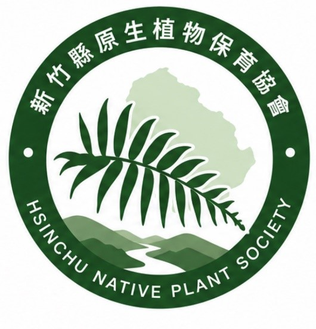
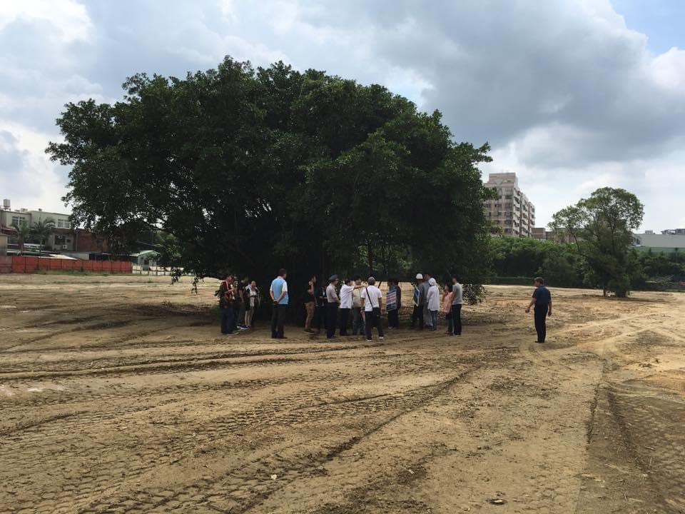
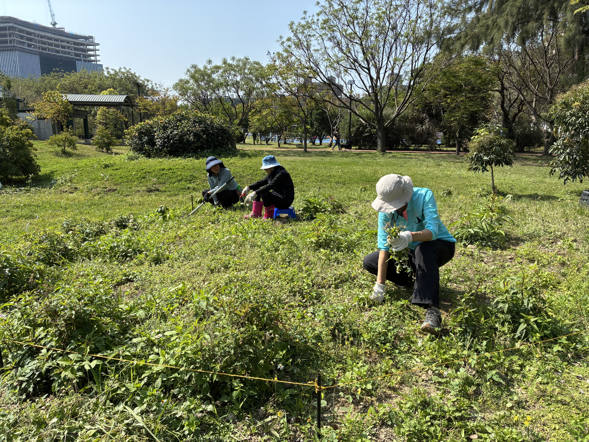
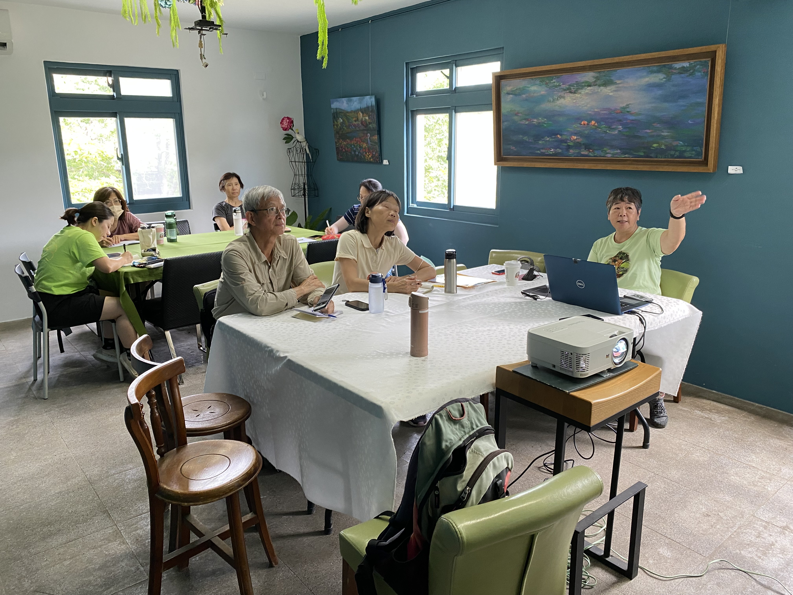
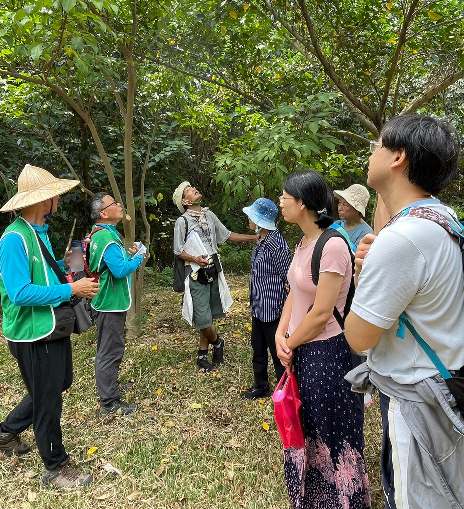

HSINCHU NATIVE PLANT CONSERVATION ASSOCIATION
讓台灣原生植物
在新竹扎根
從認識一株植物開始，守護台灣土地的生態記憶，讓人與自然在日常中重新相遇。
認識我們ABOUT US
關於我們
認識台灣原生植物，守護自然環境，讓生態保育從每一個人的行動開始。
新竹縣原生植物保育協會
新竹縣原生植物保育協會致力於台灣原生植物的認識、 推廣、調查、研究與保育，並透過生態教育與志工培訓， 引導民眾認識自然、欣賞自然，共同守護台灣珍貴的原生植物。
協會也積極推動生態校園、環境教育、戶外解說及原生植物 生態課程，讓原生植物保育的觀念能夠向下一代扎根。

HISTORY
歷年大事記
2017
第一屆新竹志工培訓
台灣原生植物保育協會新竹志工培訓第一屆。
2018
國際環境教育園區
在新竹縣竹北空品區推動國際環境教育園區， 遍植台灣原生植物。
2022
每月解說活動開始
國際環境教育園區開始定期舉辦每月解說活動。
2023
新竹縣原生植物保育協會成立
新竹縣原生植物保育協會成立， 接續認養國際環境教育園區。
2024
承辦園區解說活動
接手承辦國際環境教育園區每月解說活動。
2025
獲環境部績優認養單位頒獎
獲得環境部績優認養單位肯定。
2026
第八屆志工培訓
持續培訓志工，並開始探索戶外解說， 每年規劃四次戶外活動。
ENVIRONMENTAL EDUCATION PARK
國際環境教育園區
竹北空品區
國際環境教育園區位於竹北市縣政二路與文忠路交叉口， 婦幼館右後方。
2018 年在新竹縣環保局指導下， 台灣原生植物保育協會規劃了 10 個植物區。
當年在附近文化里、興安里、竹北里居民及貴賓見證下， 下種將近 1 萬棵台灣原生植物。

ADOPTION & EDUCATION
認養經營
透過志工參與與環境教育，持續守護國際環境教育園區。

植栽養護
植栽養護、澆水、環境清潔及定期施肥。

志工培訓
每月第三個週六舉辦志工培訓課程。

生態解說
每月第三個週日舉辦園區解說活動。
🌱 不定期配合教育研習、演講及戶外解說課程。
🌱 解說志工超過 10 位，目前進行第八屆志工培訓。
🌱 逐步推動原生植物生態教育與自然體驗。
BASIC INFORMATION
協會基本資料
團體名稱： 新竹縣原生植物保育協會
成立日期： 中華民國 112 年 06 月 04 日
會址： 新竹縣竹北市莊敬六街 248 號
立案文號： 府社行字第 112029 號
發證機關： 新竹縣政府
NEWS
最新消息
在地生態教育與保育活動將陸續公布
活動消息歡迎關心原生植物的朋友，一起參與守護行動
志工招募SUPPORT OUR WORK
邀請您支持
台灣原生植物保育
您的捐款將支持原生植物保育、生態教育推廣與在地環境關懷行動。誠摯邀請您與我們一起，守護台灣珍貴的自然生命。
GET INVOLVED
一起讓台灣的綠意延續
無論是參加活動、成為志工，或分享你所看見的植物故事，每一份投入都能讓保育向前一步。
聯絡我們